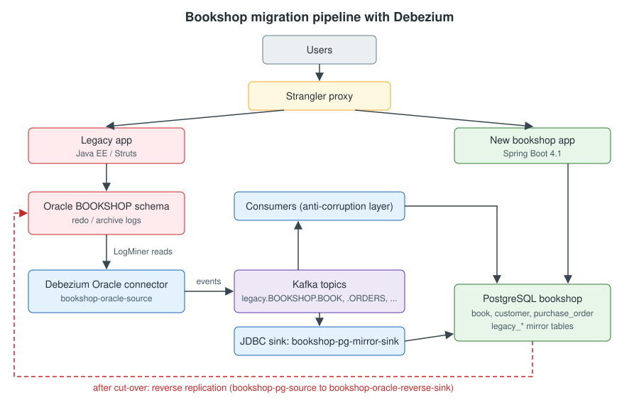

Database Migration
|
This content was generated with the assistance of AI and should be verified against the official documentation before being relied on in production. |
Most systems that need replacing are attached to a database that cannot be switched off. The legacy application keeps writing to it while the new system is built, tested and rolled out one capability at a time, so for weeks or months two databases hold overlapping data and both must stay correct. This section explains how to do that with Debezium, the open source change data capture (CDC) platform. Debezium reads the legacy database’s own transaction log, turns every committed insert, update and delete into an event, and publishes the events to a broker (Apache Kafka by default). Those events are then used to listen to the legacy system: to fill and maintain the new database, to feed new services, to verify that both sides agree and, after the cut-over, to keep the legacy side current in the other direction until it can be retired.
The architecture pages of this site already explain why log-based CDC is the safer way to keep a legacy and a new database in sync:
-
Migration Overview sets the rules of every migration on this site: no big bang, the strangler fig, and showing value early.
-
Migration Path: From a Legacy Stack to a Modern One compares dual writes with CDC for the overlap period.
-
Migration Path: From a Monolith to Microservices uses transaction-log tailing when the monolith’s code cannot be changed.
-
Transactional Outbox compares the polling publisher with transaction-log tailing.
-
Kafka Connect explains the runtime that most Debezium deployments use.
This section explains how: every concept of the official Debezium documentation, applied to the job of generating change events from a legacy database, listening to them and using them to migrate the data.
The content was checked on 2026-11-09 against Debezium 3.7.1.Final, the current stable release.
Version baseline
| Component | Version used in this section (checked 2026-11-09) |
|---|---|
Debezium |
3.7.1.Final (released 2026-11-06). 3.8 is in development (3.8.0.Alpha1); it is mentioned only as upcoming. |
Java |
17 or later for the connectors; 21 or later for Debezium Server, the Debezium Operator and the Quarkus extensions. |
Kafka and Kafka Connect |
Kafka 4.x in KRaft mode, as shipped in the |
Databases |
Oracle AI Database 26ai Free, image |
Applications |
Spring Boot 4.1 with Spring for Apache Kafka 4.1 on Java 21. |
What’s covered
Introduction
-
Migration Strategies — big bang, dual writes, batch ETL, triggers, query-based and log-based CDC compared.
-
Migration Patterns with CDC — the phases of a CDC-driven migration, the strangler fig at the data layer, the anti-corruption layer as a stream translator.
Debezium fundamentals
-
Debezium Architecture — Kafka Connect, Debezium Server and the Debezium Engine.
-
Features & Delivery Guarantees — snapshots and streaming, transaction metadata, at-least-once delivery, ordering and exactly-once.
-
Getting Started: First Change Events — the official tutorial as a Docker Compose stack.
-
Installing Debezium — images, plugin archives, Maven artifacts and the Connect worker configuration.
Change events
-
Anatomy of a Change Event — keys, the envelope,
opcodes, tombstones. -
Serialization & Schema Registries — JSON, Avro, Apicurio and Confluent registries, SerDes and CloudEvents.
-
Data Types & Precision — decimals, time, binary data, LOBs, and the Bookshop type mapping.
Source connectors
-
Oracle Connector — LogMiner, OpenLogReplicator and XStream: the legacy source of the example.
-
PostgreSQL Connector — logical decoding, slots, publications, and PostgreSQL as the source of reverse replication.
-
MySQL & MariaDB Connectors — binlog, GTIDs and the schema history.
-
SQL Server Connector — SQL Server CDC and capture instances.
-
MongoDB Connector — change streams and pre-images.
-
Db2, Informix, Cassandra & Others — the rest of the connectors and their maturity.
Snapshots and signals
-
Initial Snapshots — copying the existing data before streaming.
-
Incremental & Blocking Snapshots — backfilling tables while streaming continues.
-
Signaling & Notifications — controlling a running connector and following its progress.
Transformations
-
Debezium Transformations — routing, filtering and the other Debezium SMTs.
-
Event Flattening — New Record State Extraction.
-
Outbox Event Router — domain events through CDC.
-
Custom Converters & Post Processors — fixing legacy column types at the source.
Listening to events and applying them
-
JDBC Sink Connector — replicating into the new database without code.
-
MongoDB Sink Connector — relational to document migrations.
-
Listening to Events in Applications — Spring Boot, Quarkus and Kafka Streams consumers as the anti-corruption layer.
-
Debezium Engine (Embedded) — CDC inside a Java application.
-
Debezium Server — CDC to Kinesis, Pub/Sub, RabbitMQ, Redis, HTTP and other sinks without Kafka.
Schema changes and the migration runbook
-
Handling Schema Changes — the schema history, DDL, and coordinating with Liquibase or Flamingock.
-
Worked Example: Oracle to PostgreSQL — the whole Bookshop pipeline in Docker Compose.
-
Verification & Reconciliation — proving that both databases agree.
-
Cut-over & Reverse Replication — switching writes, replicating back and decommissioning.
Operations
-
Running on Kubernetes — Strimzi, the Debezium Operator and the Debezium Management Platform.
-
Monitoring, Logging & Tracing — JMX metrics, Prometheus, Grafana, OpenTelemetry and OpenLineage.
-
Offsets, Restarts & Exactly-Once — offset storage, resets and exactly-once delivery.
-
Troubleshooting & Failure Recovery — symptoms, causes and fixes.
-
Security & Data Protection — least privilege, TLS, secrets and masking.
-
Testing CDC Pipelines — Testcontainers and the embedded engine.
-
Cloud Databases & Managed Kafka — RDS, Aurora, Cloud SQL, Azure and managed Connect.
-
Beyond Migration — caches, audit logs, read models and Debezium AI.
Wrap-up
-
Choosing a Deployment — a decision guide.
-
Best Practices — the checklist from preparation to decommission.
-
Glossary — the terms used across the section.
-
Cheat Sheet (PDF) — a printable one-page summary.
Reading path
Pick the path that matches what you need:
-
New to change data capture. Read Migration Strategies, Debezium Architecture and Getting Started: First Change Events, then Anatomy of a Change Event.
-
Planning a migration from a legacy database. Read Migration Patterns with CDC, the connector page of your source database, Initial Snapshots, JDBC Sink Connector and Listening to Events in Applications, then follow Worked Example: Oracle to PostgreSQL from start to finish.
-
Approaching the cut-over. Read Verification & Reconciliation, Cut-over & Reverse Replication and Best Practices.
-
Operating Debezium. Read Running on Kubernetes, Monitoring, Logging & Tracing, Offsets, Restarts & Exactly-Once and Troubleshooting & Failure Recovery.
-
Choosing between Kafka Connect, Debezium Server and the embedded engine. Read Choosing a Deployment.
Related material on this site
-
PostgreSQL Reference — the target engine of the worked Oracle to PostgreSQL migration: logical replication,
COPY, roles, and verification queries. -
MySQL Reference — binary log, GTIDs and replication, the source side of MySQL change data capture.
Bibliography
Every source used to write this section, each linked to its official website. Each page lists the sources it used under
its own References heading. Links were checked on 2026-11-09; every page returned HTTP 200 except the MySQL
reference manual pages on dev.mysql.com, which refuse automated clients (HTTP 403) but open normally in a browser.
Debezium reference documentation
Debezium project, releases, blog and repositories
-
Debezium source (v3.7.1.Final) — AbstractLogMinerStreamingChangeEventSource.java
-
Debezium 3.7.0.Final release announcement — PostgreSQL GUC logical decoder support
-
Debezium blog — Building audit logs with change data capture and stream processing
-
Debezium blog — Creating DDD aggregates with Debezium and Kafka Streams
-
Debezium blog — Five Advantages of Log-Based Change Data Capture (Gunnar Morling, 2018)
-
Debezium blog — Reliable Microservices Data Exchange With the Outbox Pattern (Gunnar Morling, 2019)
-
Debezium FAQ — Removing offsets with Kafka Connect 3.6 or later
-
Debezium source code — OracleConnectorConfig (3.7.1.Final), catalog name used for table ids
-
debezium-examples — monitoring (JMX exporter configuration, Prometheus and Grafana dashboards)
-
debezium-examples — monitoring/debezium-jmx-exporter/config.yml
-
debezium-examples — monitoring/debezium-jmx-exporter/Dockerfile
-
debezium-examples — monitoring/debezium-prometheus/Dockerfile
-
debezium/debezium — FieldToEmbedding source at v3.7.1.Final (configuration names)
-
debezium/debezium — OracleConnectorConfig.java (table identifiers use the PDB name)
Apache Kafka, Kafka Connect and the Kafka ecosystem
Databases
Cloud providers
-
AWS — Performing logical replication for Amazon RDS for PostgreSQL
-
AWS — Setting up logical replication for your Aurora PostgreSQL DB cluster
-
AWS — Using change data capture for Amazon RDS for SQL Server
-
Google Cloud — Configure database flags (Cloud SQL for PostgreSQL)
-
Google Cloud — Set up logical replication and decoding (Cloud SQL for PostgreSQL)
-
Google Cloud — Set up logical replication and decoding in Cloud SQL for PostgreSQL
-
Microsoft Learn — Change data capture with Azure SQL Database
-
Microsoft Learn — Logical replication and logical decoding in Azure Database for PostgreSQL
-
Microsoft Learn — Logical replication and logical decoding in Azure Database for PostgreSQL
-
AWS — Amazon MSK Connect: use a Debezium source connector with a configuration provider
Patterns, talks and books
Running example: Bookshop
The pages use the same Bookshop system as the architecture pages. The legacy application is a Java EE / Struts monolith
on a single Oracle schema, BOOKSHOP. The new application is a Spring Boot 4.1 application, bookshop, on
PostgreSQL 18, with a different model. The local examples run Oracle AI Database 26ai Free (container image
gvenzl/oracle-free:23.26.3).
| Concept | Legacy Oracle (BOOKSHOP schema) |
New PostgreSQL (bookshop database) |
|---|---|---|
Books |
|
|
Authors |
|
|
Customers |
|
|
Orders |
|
|
Supplier feed |
|
|
The pipeline built across the section is as follows:
-
The
bookshop-oracle-sourceconnector (topic prefixlegacy) streams the changes of the legacy schema to topics such aslegacy.BOOKSHOP.BOOK. -
The
bookshop-pg-mirror-sinkJDBC sink connector copies the tables that keep their shape intolegacy_*mirror tables. -
Consumers in the new application (
LegacyBookTranslator,LegacyCustomerTranslatorandLegacyOrderProjector) act as the anti-corruption layer that translates the legacy rows into the new model. -
After the cut-over, the
bookshop-pg-sourceconnector (topic prefixmodern) and thebookshop-oracle-reverse-sinkconnector replicate changes back to Oracle, so that a rollback stays possible.
A smaller MongoDB example (bookshop.reviews to a PostgreSQL book_review table) covers the cases where one side is
a document database and the other is relational.
